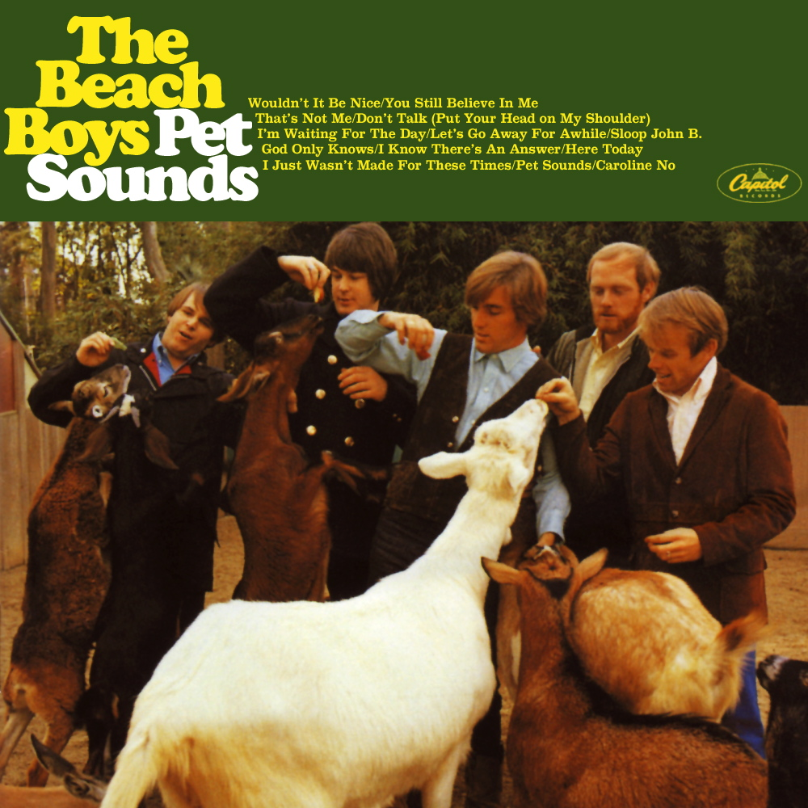

Grabado en un periodo de 129 días y publicado el 1 junio de 1967 en el Reino Unido y el 2 de junio del mismo año en Estados Unidos, es a menudo citado por la crítica como una de sus mejores obras y uno de los discos más influyentes de todos los tiempos. Continuando con la maduración artística de la banda vista en Revolver (1966), se alejó bastante del pop rock convencional de la época e incorporó elementos poco comunes y muy divergentes entre sí a su música, como baladas, música psicodélica, music hall, e influencias sinfónicas.
